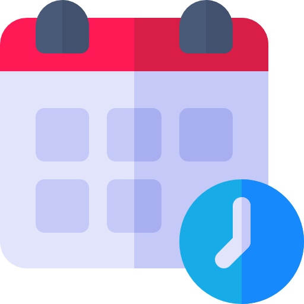

<ion-header translucent>
  <ion-toolbar>
    <ion-buttons slot="start">
      <ion-button routerLink="/adoptar/paso-2">
        <ion-icon name="arrow-back-outline" size="large" slot="start"></ion-icon>
      </ion-button>
    </ion-buttons>
    <ion-title class="ion-text-center">Agendar cita</ion-title>
  </ion-toolbar>
</ion-header>
<ion-content class="ion-text-center ion-padding">
  <br>
  <br>
  <div class="ion-text-center">
     
  </div>
  <ion-item color="primary">
    <ion-label>Fecha</ion-label>
    <ion-datetime display-format="DDDD MMM D, YYYY" min="2005" max="2030" ></ion-datetime>
  </ion-item>  
  <br>
  <div class="ion-text-center"> 
    <ion-button color="light" class="ion-text-center" routerLink="/adoptar/paso-3">Guardar Cita</ion-button>
  </div>
</ion-content>